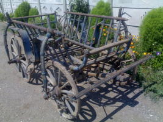
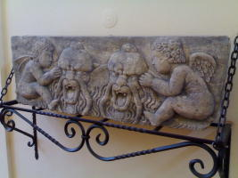
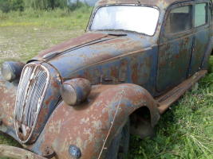

Specializată în restaurări lemn, piatră şi metal, VALICOM S.R.L. vă prezintă aici o parte din lucrările principale. Diversitate, calitate, bun gust - reprezintă cartea noastră de vizită şi ne recomandă tuturor clienţilor noştri.
Restaurări lemnRestaurări obiecte decorative şi funcţionale din lemn, obiecte tradiţionale - inclusiv mobilier vechi, porţi şi uşi de castel. |
 | |
Restaurări piatrăRestaurări şi execuţie obiecte decorative şi funcţionale din piatră. |
 | |
Restaurări metalRestaurări automobile de epocă şi execuţie obiecte metalice decorative sau funcţionale |
 |
Activitatea de restaurare a unui obiect înseamnă refacerea sa la stadiul iniţial, readucerea la forma sau aspectul original, pe cât posibil cu păstrarea funcţionalităţii iniţiale. Această activitate necesită calificări multiple, pasiune, răbdare şi un simţ artistic deosebit.
Restaurăm obiecte decorative sau funcţionale pentru casa, grădina, terasa sau biroul dumneavoastră.
Obiectele netransportabile pot fi restaurate "in situ" - în locul unde se găsesc.